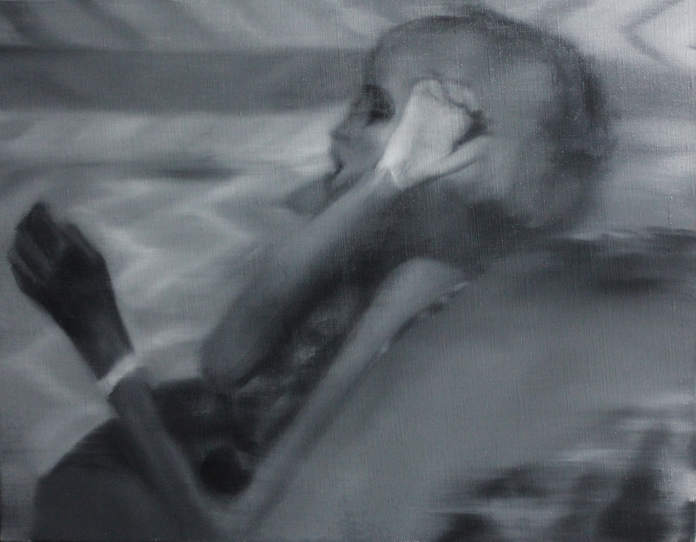
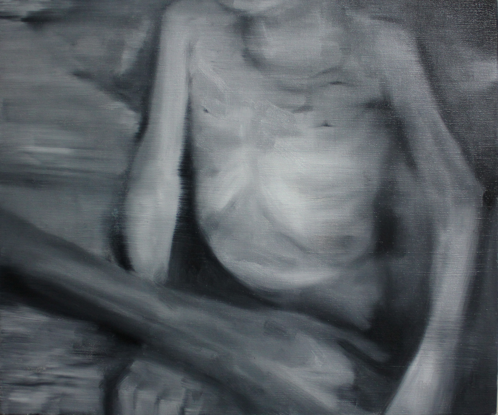
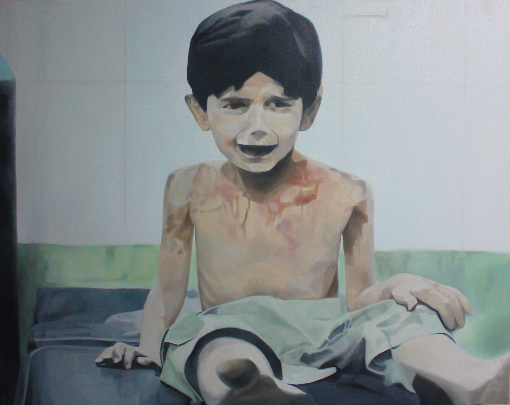
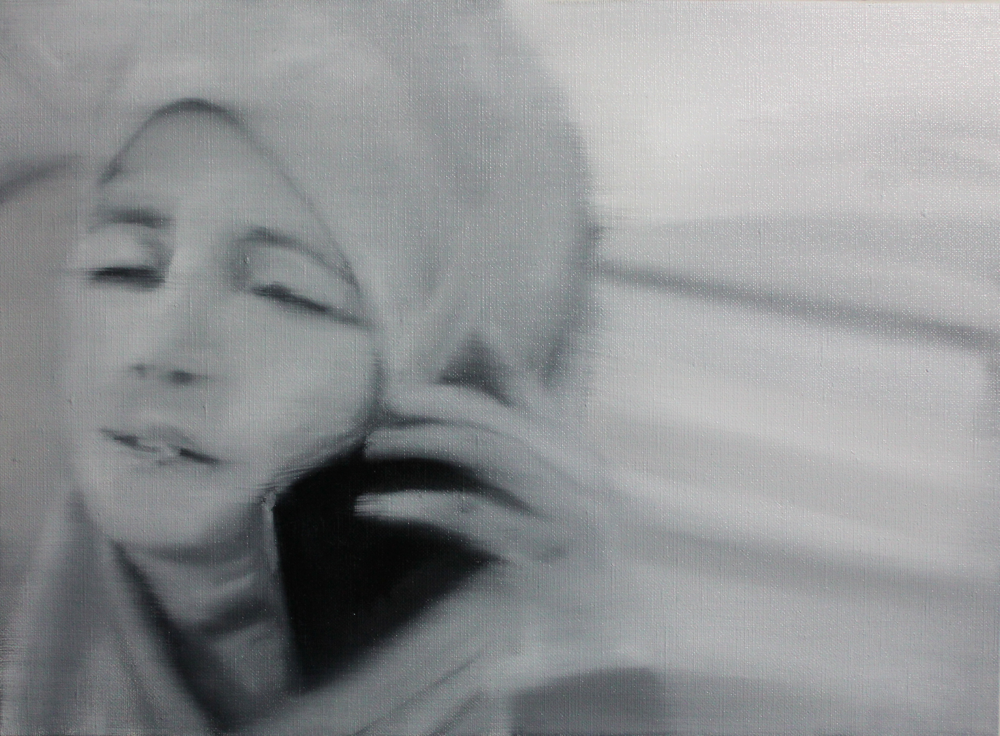
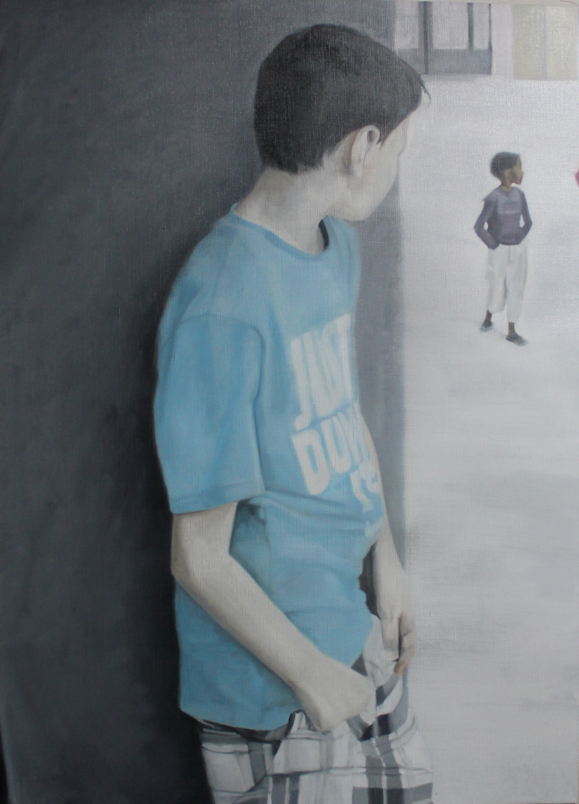
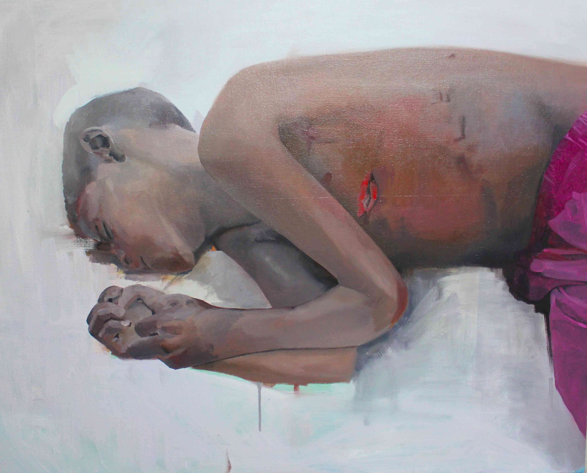
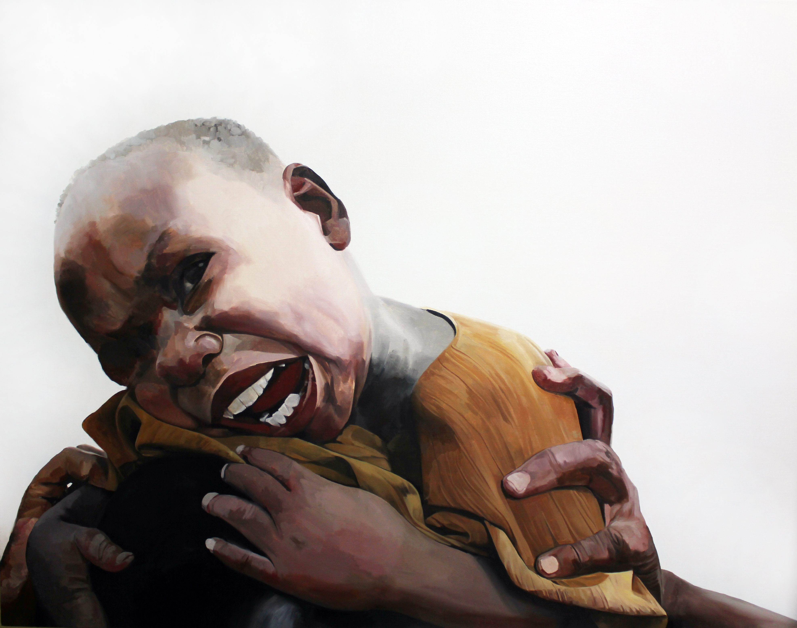

2016

さけび（ガザ）
破壊された瓦礫の中で、助けを求めるように右手を伸ばし、泣き叫ぶ子ども。F100号という大画面いっぱいに描かれたその姿は、鑑賞者の空間へ直接的に介入してくる。
油彩特有の物質感が、顔に負った傷や衣服の汚れ、そして声なき叫びの振動を画面に定着させている。遠く離れた地で起きている惨劇を、私たちはただの「画像」として消費してはならない。絵画を通して身体的に向き合うことを強烈に迫る一点である。
Series — Refugees · Oil on Canvas
Refugees
絵画は、報道が届かない場所へ行く。
「ぜんぶかみさまにいいつけてやるんだから」
— 3歳で死んだシリアの難民の子供が最後に言い残した言葉, 2014
Series Statement
描かないことは、見なかったことと同じだ。
だから私は、描く。
「難民（子ども）/ Refugees」シリーズは、シリア内戦・アフリカ・ケニアのイフォ難民キャンプで撮影された報道写真を起点に制作された油彩作品群だ。写真という瞬間の証拠を、絵画という時間の堆積へと変換することで、これらの像に別の生を与えようとした。
子どもたちが写真に写った。そしてその多くは、今はもういない。写真は「あった」という事実を記録する。しかし絵画は、その事実を見る者の身体へと接触させる。カンバスに残る絵の具の質感、重なり合う色の層——それは単なる複製ではなく、画家の眼と手が問い直した「存在の記憶」だ。
このシリーズを描き始めたとき、私は絵画に何ができるかより、絵画が何をしなければならないかを考えていた。報道写真はすでにそこにある。誰もが見ようと思えば見られる。しかし、見られていない。油彩を選んだのは、その物質としての重さのためだ。写真が光の記録であるなら、油彩は物質の記録だ。
一枚の絵を前にして、私たちは統計の中の一人ではなく、一人の子どもの顔と向き合う。「見ること」の倫理——それは傍観ではなく、応答責任の始まりだ。
— Tsuda Shoichi









破壊された瓦礫の中で、助けを求めるように右手を伸ばし、泣き叫ぶ子ども。F100号という大画面いっぱいに描かれたその姿は、鑑賞者の空間へ直接的に介入してくる。
油彩特有の物質感が、顔に負った傷や衣服の汚れ、そして声なき叫びの振動を画面に定着させている。遠く離れた地で起きている惨劇を、私たちはただの「画像」として消費してはならない。絵画を通して身体的に向き合うことを強烈に迫る一点である。
これは最後の言葉を持つ絵画だ。タイトルそのものが証言であり、遺言だ。3歳の子どもがシリアの戦禍の中で言い残したというこの言葉——「ぜんぶかみさまにいいつけてやるんだから」——を、津田はキャンバスの題として刻んだ。
描かれた子どもは、まだここにいる。医療施設のベッドに座り、傷を負いながらも、こちらを見ている。あるいは見ていない。油彩の層が証言する——この子は実在した。誰も彼女の名を知らないとしても、この絵は彼女の存在を永続させる。
10億5700万——アフリカ大陸の人口を示す数字がタイトルに置かれる。この巨大な数の中に、一人の子どもの身体が横たわる。うずくまり、手を組み、頭を伏せている。
数は人を匿名化する。10億という規模において、個人の苦痛は統計の誤差となる。しかしこの絵画は、その巨数の背後にある一つの身体の重さを問う。横たわる子どもに名前はない。しかし、油彩の厚みがその存在に固有の重力を与えている。
「おんぶ」——これほど日常的な言葉が、これほど重い文脈に置かれることはない。ケニアのイフォ難民キャンプで撮られたこの像において、背負うという行為は愛情であると同時に、生き延びることの全重量だ。
子どもは背にしがみついている。その顔は、笑っているのか、泣いているのか。大判のキャンバスに描かれた近景の顔は、見る者と呼吸の距離で向き合う。イフォ難民キャンプには、2011年時点で推定40万人以上が暮らしていた。この子は、その40万のうちの一人だ。
タイトルは「今、シリア」だ。過去形ではない。現在進行形の惨禍として、この絵画は描かれた。F100号（162×130cm）——大判の画面に、子どもの顔と両手が迫ってくる。
血と傷と、それでも開かれた口。叫んでいるのか、呼んでいるのか。両手を前に差し出す姿勢は、助けを求めているのか、あるいはこちらを押し止めようとしているのか。大画面が持つ圧倒的な身体性が、「見て見ぬふり」を不可能にする。これは最も激しく、最も静かな告発だ。
Contact
展覧会・作品購入・取材・コラボレーション等、
お気軽にご連絡ください。